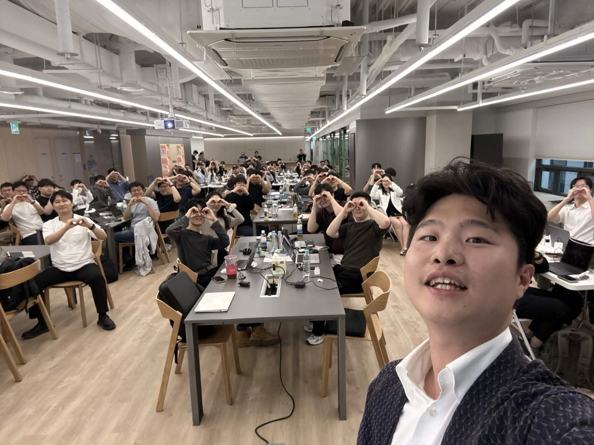
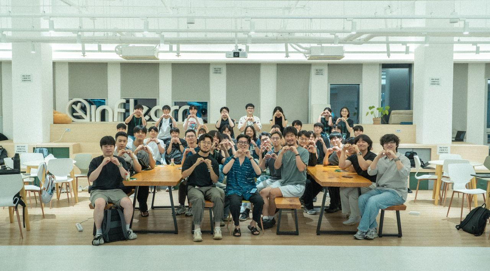
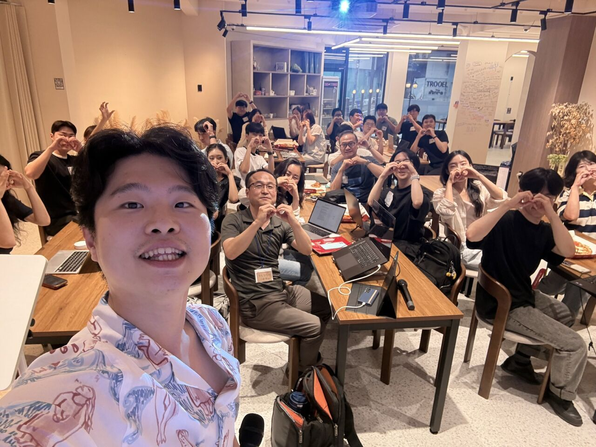
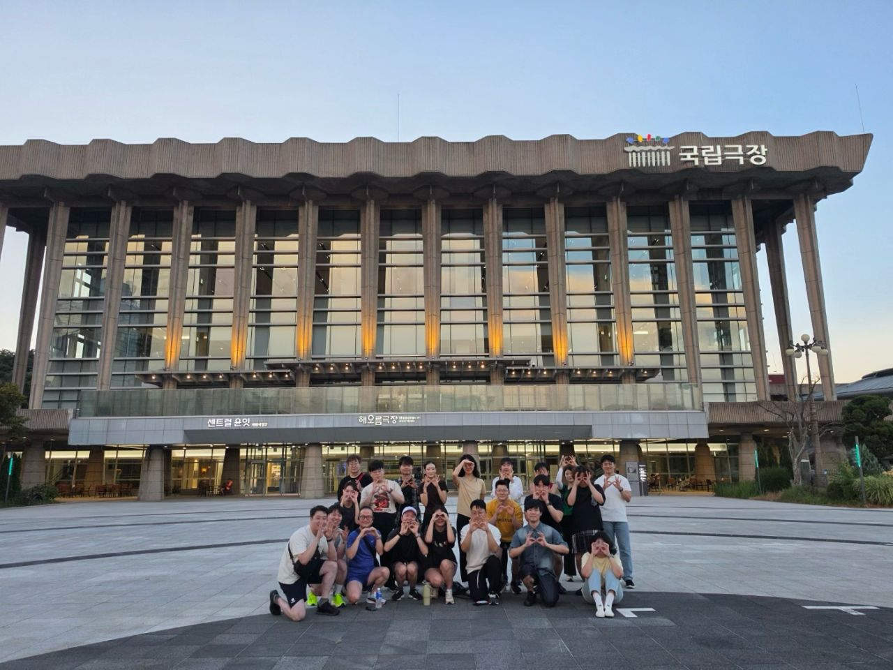
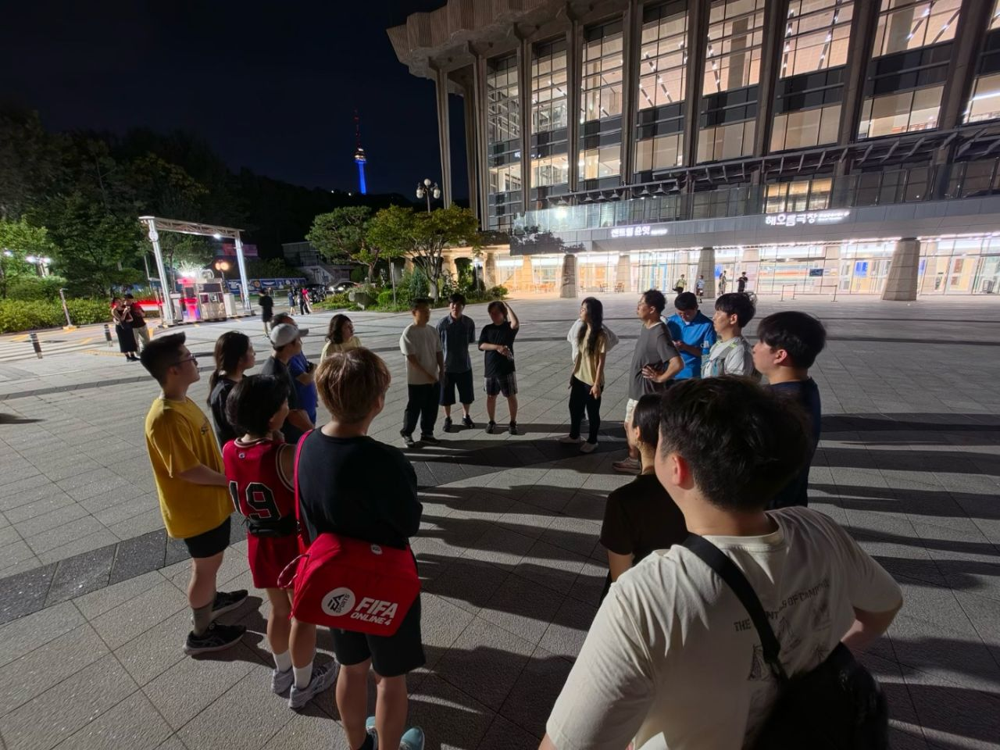

By selection
Founders, CEOs, executives and seasoned leaders. 대표·1인 창업자·임원·현업 리더 중심으로 100명을 선발합니다.
A selective AI community
for founders and decision-makers
대표·창업자·의사결정권자를 위한 선발제 AI 커뮤니티
What is OOO Seed
회사를 이끄는 사람이 AI를 직접 다뤄 보는 자리
100 selected · 6 Sundays · Free with a refundable deposit. No coding experience needed.
100명 선발 · 6번의 일요일 · 참가비 무료(보증금 반환) · 코딩 경험 불필요
Founders, CEOs, executives and seasoned leaders. 대표·1인 창업자·임원·현업 리더 중심으로 100명을 선발합니다.
Not a lecture. 시연을 보고 내 노트북에서 바로 실행합니다.
Founders and leaders across industries. 다른 산업의 대표·리더와 시도와 판단을 나눕니다.
People who make the next call
다음 결정을 내리는 사람
Who's in
이런 분들과 함께합니다
Deciding how much to bet on AI, after trying itAI에 얼마를 걸지, 직접 써보고 정하고 싶다
Running the whole business with AI as a teamAI를 팀처럼 써서 혼자 회사를 굴리고 싶다
Understanding it before the adoption report lands도입 보고를 받기 전에 먼저 이해하고 싶다
Moving before the industry shifts업계가 바뀌기 전에 먼저 시도해 보고 싶다
Knowing how far to trust AI in expert judgment전문 판단에 AI를 어디까지 믿을지 알고 싶다
Choosing tools by using them first팀이 쓸 도구를 먼저 써보고 고르고 싶다
If your next call needs first-hand AI다음 결정을 직접 써보고 내리고 싶다면
Since 2026.07
우로보로스 커뮤니티





Cohort 01 · 6 Sundays
CO-WORK3H
11.15 SUN · 14:00–17:00
모각코 · MindAI(메가코드) · 30석
Luma ↗SESSION3H
11.29 SUN · 14:00–17:00
검증 · 결과를 내 기준으로 확인
Luma ↗CO-WORK3H
12.13 SUN · 14:00–17:00
모각코 · 뷰티셀렉션
Luma ↗SESSION3H
12.27 SUN · 14:00–17:00
비즈니스 적용 · 자료·승인·비용까지
Luma ↗CO-WORK3H
01.10 SUN · 14:00–17:00
모각코 · 뷰티셀렉션
Luma ↗SESSION3H
01.24 SUN · 14:00–17:00
성과 공유회 · 해커톤
Luma ↗Sessions: Seed members first, open seats by approval · Co-work: Seed members only
전문 세션은 Seed 멤버 우선, 남는 좌석은 일반 승인제 · 모각코는 Seed 멤버 전용
Events
행사 종류
Seed onlySelected members · Seed 멤버 전용
Expert sessionsMembers first, open seats by approval · Seed 우선, 남는 좌석 일반
Ouroboros CommunityOpen to everyone · 누구나
CalendarAll upcoming events · 전체 일정
Members
멤버 특전
How it works
참여 방법
FAQ
자주 묻는 질문
1) Apply here by Nov 7. 2) If selected (Nov 8), transfer the deposit by Nov 11. 3) Once confirmed, we register you on Luma ourselves: you get a confirmation email and QR ticket for each session, so there is nothing to sign up for. Nov 15 co-work (30 seats) is the one exception: register first come through your Luma invitation. 4) Can't make a session? Press Not going on Luma (expert sessions: 7 days before). 5) Check in with your QR code; this counts toward completion. ① 11/7까지 이 페이지에서 신청 ② 11/8 선정 메일을 받으면 11/11까지 보증금 입금 ③ 확정되면 운영진이 Luma 회차에 직접 등록해 드립니다. 회차마다 등록 확인 메일과 QR 티켓이 가며, 따로 신청할 것은 없습니다. 단, 11/15 모각코(30석)는 Luma 초대 메일로 선착순 등록합니다. ④ 못 가는 회차는 Luma에서 「참석 안 함」(전문 세션은 7일 전까지) ⑤ 당일 QR로 체크인하면 수료 출석에 반영됩니다.
Yes, partly. Expert sessions (Nov 29, Dec 27) have open seats: register on Luma, and remaining seats are confirmed 7 days before each session. Co-work days and the Jan 24 showcase are for members only. Welcome, Run and meetups are open to everyone. 전문 세션(11/29·12/27)은 Luma에서 일반 신청을 받아 행사 7일 전 남는 좌석을 확정합니다. 모각코와 1/24 성과 공유회·해커톤은 멤버 전용이고, Welcome·Run·밋업은 누구나 참여할 수 있습니다.
No. Founders, solo founders, executives and leaders who make decisions are all welcome. 대표·1인 창업자·임원·현업 리더 모두 신청할 수 있습니다.
No. 코딩 경험은 묻지 않습니다.
Experience and decision-making, how concrete your goal is, availability, and diversity of industries. 경력과 판단 경험, 해보고 싶은 일의 구체성, 참석 가능성, 산업 다양성을 봅니다.
For the certificate and full refund: at least four of the six sessions after selection, including Jan 24, plus one shared piece of work. Nov 1 Welcome is open to everyone and does not count. 수료와 보증금 전액 반환 기준은 선정 후 6회 중 4회 이상 참석(1/24 필수)과 직접 만든 작업 1건 공유입니다. 11/1 Welcome은 공개 행사라 출석에 넣지 않습니다.
No fee. Selected members pay a refundable ₩100,000 deposit, returned in full on completion. 참가비는 없고, 선정자는 보증금 10만원을 내며 수료하면 전액 돌려받습니다. 식사는 제공하지 않습니다.
Seats are limited; the deposit keeps them for people who show up. See the deposit policy on the application page. 좌석이 한정되어 있어 실제로 참여할 분께 자리를 드리기 위함입니다. 규정은 신청 페이지에 있습니다.
A laptop and charger. 노트북과 충전기. 회사 내부 자료는 가져오지 않아도 됩니다.
Use the personal link in your confirmation email. 접수 메일의 개인 취소 링크를 누르면 됩니다.
Sessions run mainly in Korean; English speakers are welcome and paired with English-speaking members. 진행은 주로 한국어이며 동시통역은 없습니다.